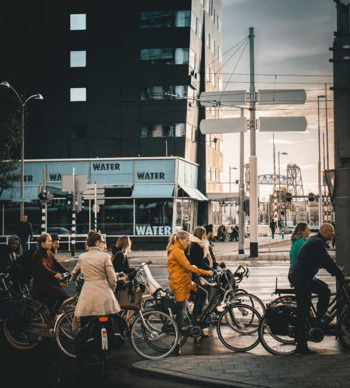

In an increasingly aware world of the importance of protecting our planet, sustainable tourism has become a popular and relevant choice for travelers. Traveling with consciousness not only allows us to enjoy authentic and enriching experiences but also gives us the opportunity to positively contribute to local communities and the environment. In this article, we will explore the fascinating world of sustainable tourism and discover how we can travel responsibly and respectfully. From stunning natural destinations to vibrant cultures and welcoming local communities, sustainable tourism invites us to explore the world in a way that protects and preserves our natural and cultural resources.
Immerse yourself in the beauty of national parks and nature reserves, where you can hike, observe wildlife, and admire breathtaking landscapes. Get to know local communities and participate in community-based tourism programs, where you can learn about cultural traditions, support sustainable projects, and directly contribute to local development. In your quest to travel sustainably, you can indulge in authentic culinary experiences in gastronomic destinations, where local products and sustainable farming practices form the basis of a delicious gastronomic offering. Additionally, you can engage in conservation activities and environmental protection, such as beach cleanups, reforestation, or responsible diving.
Sustainable tourism not only allows us to explore the world but also invites us to be agents of change and leave a positive impact in every place we visit. By choosing sustainable transportation options, eco-friendly accommodations, and respecting local norms and the environment, we can ensure that our travel experiences are in harmony with nature and local cultures. In summary, sustainable tourism offers us the opportunity to travel with consciousness and enjoy unforgettable experiences while contributing to the conservation of our planet. It's time to embrace a new approach to our travels and be part of the sustainable tourism movement. Travel with consciousness and leave a positive footprint in every destination you explore!